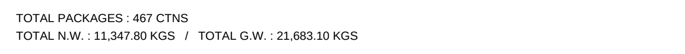
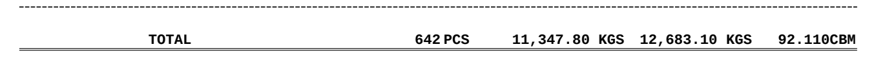

2026 PNU X AWS AI 마에스트로 · 6팀
포워더가 관세사에게 넘기기 전,
서류 검토를 AI가 대신합니다
물류 문서 자동화 Agent. 서류를 나누고 읽고, 서로 맞춰 보고,
문제없는 건은 끝까지 보내고 예외만 사람에게 넘깁니다.
Amazon BedrockAmazon TextractStrands AgentsLambda · S3 · DynamoDB
문제
같은 짐을 서류 네 장이 따로 말합니다.
한 칸이 어긋나면 통관이 늦어집니다
상업송장: 총중량 21,683.10 KGS

포장명세서: 총중량 12,683.10 KGS

같은 화물의 서류 두 장. 앞 두 자리가 바뀌었다. (개발용 합성 서류 D003)
65~80%
신용장 거래에서 서류가 첫 제시에 거절되는 비율 (ICC 추정)
74%
수입 오류 신고 가운데 품목분류(HS) 오류 (관세청)
범위
수입 전체가 아니라
'신고 전 서류 검토' 한 구간을 깊게 팠습니다
깊게 한 것 (포워더의 일)
- 서류 종류 나누고 읽기
- 서류끼리 숫자 맞춰 보기
- 빠진 서류 찾기
- 어긋난 칸을 다른 방법으로 다시 확인
초안과 추천까지 (확정은 사람)
- HS 코드 후보와 이유
- 수입신고서 초안
- 정정 요청 문서
- 가상 WMS 등록, 현황 조회
하지 않는 것
- 실제 세관 신고
- 세관 심사와 수리
- 실제 통관 추적 (시연용 화물 기록 사용)
HS 코드는 관세율과 수입 요건을 정하고, 틀리면 신고한 쪽이 책임집니다. 그래서 AI는 추천하고 관세사가 확정합니다.
한 건이 처리되는 길
과제 기능 다섯 개가 한 흐름입니다. 예외만 사람에게 갑니다
파란 상자모델이 하는 일회색 상자코드가 하는 일 (판정, 확정, 초안, 등록, 조회)
알아낸 것 ①
정답지가 먼저다
주최 측 샘플 서류가 없었습니다. 그래서 코드보다 정답지를 먼저 만들었고, 모든 숫자에 분모가 생겼습니다.
125세트 479장
공개된 실제 양식을 본뜬 합성 서류. PDF, PNG, 스캔본이 섞여 있다
심은 오류 21종
근거: UCP 600, ISBP, 관세법령, FTA 고시. 헷갈리지만 정상인 차이 4종도 함께
발표용 50세트 잠금
저장소에 올리지 않고 해시 198개만. 프롬프트와 규칙은 개발용만 보고 고쳤다
정답지가 있어서 고친 것: 읽기 108/150장 → 틀린 원인이 두 가지뿐임을 찾음 → 150/150장
알아낸 것 ②
읽기는 모델, 판정은 코드.
차이는 작았고, 택한 이유는 정확도가 아닙니다
| 개발용 75세트 | 모델 혼자 | 읽기는 모델, 판정은 코드 |
|---|
| 심은 오류 37건 | 37건 찾음 | 37건 찾음 * |
| 오류 없는 42세트 | 4세트를 불일치로 봄 | 0세트 * |
| 같은 세트 10번 | 재지 않음 | 4세트 모두 10번 같은 판정 |
* 정답 값을 넣어 규칙만 잰 값. 실제 판독을 거친 전체 숫자는 측정 중.
QDT/26/0279 ↔ QDT26/0279
모델 혼자: 불일치 · 우리 규칙: 참고 (구분 기호만 다름)
그래도 코드가 판정하는 이유
- 같은 서류에는 같은 판정
40번 중 40번
- 근거가 코드에서 나온다
짚은 칸, 근거 문장, 확인 방법
- 판정이 등록의 스위치다
불일치가 남으면 승인해도 등록되지 않는다
알아낸 것 ②의 뒷받침
에이전트 루프를 두 번 쟀습니다. 판정은 같았습니다
| 언제 | 잰 것 | 판정 | 세트당 시간 | 정한 것 |
|---|
| 14:40 | 7세트 | 같음 | 5.8초 대 10.7초 | 끄고 배포 |
| 22:14 | 3세트
4종 읽기·HS·다시 확인 포함 | 같음 | 11.8초 대 19.3초 | 켬 |
- 에이전트가 정하는 것: 어떤 도구를 어떤 순서로 부를지, 끝낼 조건이 빠졌을 때 무엇을 더 부를지
- 코드가 지키는 것: 판정, 끝낼 조건 네 가지, 한도
- 한도는 모델 호출 12번, 150초. 넘으면 코드가 정해진 순서로 마저 한다
배포본의 진행 기록
classify_document × 4
read_document × 4
cross_check → 불일치 1건
reread_field × 3
recommend_hs × 2
finish_report → 조건을 모두 채움
대가: 세트당 모델 호출 약 5번, 시간 약 1.6배
알아낸 것 ③
왜 비전 모델 → 규칙 검증 → OCR 순서인가
1읽기: 비전 모델
- 처음 보는 양식도 규칙 없이 읽는다
- 품목 행까지 읽어 HS와 신고서에 쓴다
잰 것: 분류 288/288장, 읽기 450/450칸
2판정: 코드 규칙
- 같은 서류에는 같은 판정
- 짚은 칸과 근거 문장이 남는다
잰 것: 같은 판정 40/40번, 표기만 다른 차이는 '참고'로
3다시 확인: OCR
- 어긋난 칸만, 읽을 때와 다른 방법으로
- PDF 글자 → Textract → 모델에 그 칸만
같은 모델에 다시 물으면 같은 실수를 되풀이하기 쉽다
순서를 바꿔 보면
| 다른 순서 | 재 본 결과 |
|---|
| OCR로 먼저 읽기 | 질의 방식 63/72칸. 좌표 규칙을 짜면 71/72칸이지만 우리 양식 전용이고 품목 행을 못 뽑는다 |
| 모델이 판정까지 | 탐지는 같았다(37/37). 오류 없는 4세트를 불일치로 봤고 근거 칸이 남지 않는다 |
알아낸 것 ③ 이어서
자동은 근거가 둘일 때만
HS 코드
- 관세사가 확정한 이력이 있거나
- 서류의 HS와 추천이 같을 때만 자동
- 나머지는 후보 3개와 이유를 주고 사람이 고른다
WMS 등록
- 불일치와 확인 필요가 없고
- 모든 품목의 HS가 정해졌을 때만 자동
- 불일치가 남으면 승인해도 등록되지 않는다
그 밖은 사람에게
- '다음 할 일' 한 줄과 함께
- 대시보드에서 작업 단위로 모아 본다
- 정정 요청 문서, HS 확인 요청서
자동 확정 70건 중 틀린 것 0 *품목 132줄. 자동 확정은 모두 확정 이력에서 나왔다
추천은 AI, 확정은 관세사후보는 관세청 HS 표 안에서만. 사람이 넣는 코드도 표에 있는지 검사한다
알아낸 것 ④
배포한 뒤 스스로 평가했습니다
22 / 25
5시간 43분 동안 닫은 피드백 이슈.
관점 13개로 찾은 문제 23건에서 나왔다
남긴 것: 열린 이슈 3개, 하지 않기로 한 것 2개 (인증, 다른 양식 시험)
| 찾은 것 | 고친 것 |
|---|
| 발표에서 하려던 답 6개 중 4개가 구현과 달랐다 | 말을 바꾸지 않고 네 개 모두 구현 |
| 읽지 못한 작업이 '승인 대기'로 끝났다 | '실패'와 이유로 (65분) |
| 빠진 서류를 알리지 않았다 | '확인 필요'로 알림 (50분) |
| 대시보드 숫자의 단위가 섞여 있었다 | 작업 단위로 (33분) |
아키텍처
서버리스로 배포했고, Lambda를 빠른 일과 오래 걸리는 일로 나눴습니다
왜 서버리스인가
- 서류가 올라올 때만 일한다. 늘 켜 둘 서버가 필요 없다
- 화면은 S3에 두고 CloudFront로 낸다
왜 Lambda가 둘인가
- API Lambda: 바로 답한다. 업로드 주소, 작업 조회, 자연어 조회
- 처리 Lambda: 한 세트에 30초 안팎. API Gateway는 30초 안에 답해야 한다
저장과 연동
- DynamoDB 테이블 5개: 작업, 화물 기록, HS 확정 이력, 채팅, 가상 WMS
- WMS는 공통 인터페이스 뒤에 있다. 실제 WMS는 구현체만 더하면 된다
AWS 생성형 AI 서비스
모델을 쓰는 곳마다, 모델이 하는 일과 코드가 막는 일을 나눴습니다
| 쓰는 곳 | 서비스 | 모델이 하는 일 | 코드가 막는 일 |
|---|
| 서류 분류와 읽기 | Bedrock | 칸에 적힌 값을 그대로 옮긴다 | 계산과 비교를 시키지 않는다. 못 읽은 칸은 비우고 일치로 세지 않는다 |
| 다시 확인 | Textract | (모델 아님) 글자와 위치를 읽는다 | 어긋난 칸만 본다. 다른 칸의 값을 같은 값으로 믿지 않는다 |
| HS 추천 | Bedrock | 검색어를 뽑고, 후보 안에서 3개를 고른다 | 후보는 관세청 HS 표에서만. 확정은 코드 규칙이나 사람 |
| 처리 순서 | Bedrock + Strands | 어떤 도구를 부를지 고른다 | 모델 호출 12번, 150초 한도. 끝낼 조건은 코드가 검사 |
| 자연어 조회 | Bedrock + Guardrails | 질문을 조회 조건으로 바꾼다 | 조회와 건수는 코드. 프롬프트 공격은 가드레일이, 무관한 질문은 코드가 막는다 |
서류 속 글자는 데이터일 뿐모든 지시문에 적었다. 쓰기(WMS, HS 이력)는 모델이 하지 않는다
만드는 데도 AI를 썼다Kiro와 Claude Code가 같은 규칙 문서와 Spec을 읽었다. 하루에 PR 128개
모델: 리전과 비용
서류는 어디서 처리되는가.
서울에서 부를 수 있는 모델로 다시 쟀습니다
| 지금 배포 | 서울 직접 호출 |
|---|
| 모델 | Claude Sonnet 5.5 | Claude Sonnet 5 |
| 부르는 길 | global 추론 프로필
추론이 국외에서 처리될 수 있다 | 서울 리전 안에서 처리 |
| 서류 분류 | 288/288장 | 15/15장 |
| 4종 서류 읽기 | 130/130칸 (15장) | 130/130칸 (같은 15장) |
| 단가 | 같다 (입력 2달러, 출력 10달러 / 100만 토큰, 직접 요금 기준) |
왜 따져 봤나
- 통관 서류에는 거래처와 금액이 있다
- 서울에는 Sonnet 5.5를 직접 부르는 길이 없다
- 모델 ID는 코드에 없고 환경 변수다
비용
서류 한 장 약 0.04달러 분류 + 읽기
Textract 쪽당 0.0015달러
11/20 하루 2,918번 호출
한계와 다음 단계
우리가 만든 시험 세트로 잰 숫자입니다. 다음은 실제 양식입니다
한계
- 합성 데이터이고 양식은 8가지다
- 발표용 세트는 아직 열지 않았다
- 다른 회사 양식과 휴대폰 사진은 재지 않았다
- 서류끼리는 맞는데 HS가 틀린 7건은 못 잡는다
- 사람이 처리한 시간을 재지 않아, 시간이 얼마나 주는지는 말하지 않는다
다음 단계
- 실제 양식으로 같은 방식으로 다시 재기
- 자주 오는 양식은 Textract 규칙으로 싸게, 막히면 비전 모델
- 모델 추론을 서울 리전으로 (같은 정답지 4세트에서 결과가 같았다)
- 공개 주소 인증
정답지를 먼저 만들고 · 판정은 코드가 하고 · 근거가 둘일 때만 자동으로 넘기고 · 배포한 뒤 스스로 평가했습니다
부록 · 측정 결과
숫자는 잰 방식을 나눠 적습니다
실측실제 모델로 잰 것 (개발용)
| 서류 분류 | 288 / 288장 |
| 읽기 (송장 번호, 총수량, 총중량) | 450 / 450칸 |
| 4종 서류 읽기 (15장) | 130 / 130칸 |
| 같은 판정 (4세트 × 10번) | 40 / 40번 |
| 현황 질문 | 24 / 24문항 |
| 한 세트(4장) 처리 시간 | 30초 안팎 |
상한정답 값을 넣어 규칙만 잰 것
| 심은 오류 (상업송장·포장명세서) | 37 / 37건 |
| 오류 없는 세트의 오탐 | 0 / 42세트 |
| B/L·원산지증명서까지 | 46 / 53건 |
| HS 자동 확정 중 틀린 것 | 0 / 70건 |
| 사람 손 없이 등록까지 | 16 / 30세트 |
46건은 불일치 43건과 확인 필요 3건이다. 놓친 7건은 서류끼리는 맞는데 HS가 틀린 경우다.